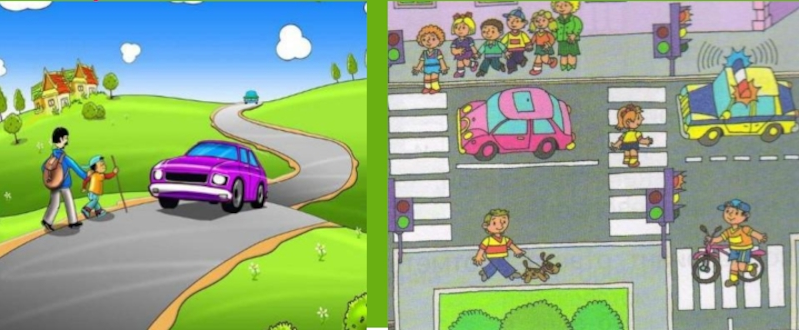
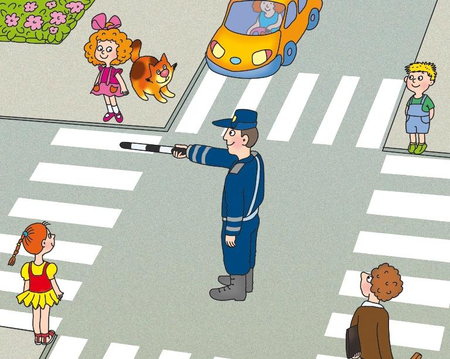

Нажмите на "вперед" и "назад", чтобы просмотреть изображения
Согласно пункта 1.2 Правил дорожного движения РФ, пешеход – это лицо, находящееся вне транспортного средства на дороге либо на пешеходной или велопешеходной дорожке и не производящее на них работу. К пешеходам приравниваются лица, передвигающиеся на инвалидных колясках без двигателя, ведущие велосипед, мопед, мотоцикл, везущие санки, тележку, детскую или инвалидную коляску.
Дорога представляет огромную опасность для пешехода, поэтому для того, чтобы обезопасить свою жизнь и здоровье, каждый пешеход обязан неукоснительно соблюдать Правила дорожного движения РФ.
В 4 разделе ПДД РФ указаны обязанности пешеходов, а именно:
- Пешеходы должны двигаться по тротуарам или пешеходным дорожкам, а при их отсутствии - по обочинам. При отсутствии таковых - по велосипедной дорожке или идти в один ряд по краю проезжей части навстречу движению транспортных средств. Лица, передвигающиеся в инвалидных колясках без двигателя, ведущие мотоцикл, мопед, велосипед, в этих случаях должны следовать по ходу движения транспортных средств (пункт 4.1. ПДД РФ).

- При переходе дороги и движении по обочинам или краю проезжей части в темное время суток или в условиях недостаточной видимости пешеходам рекомендуется, а вне населенных пунктов пешеходы обязаны иметь при себе предметы со световозвращающими элементами и обеспечивать видимость этих предметов водителями транспортных средств (пункт 4.1. ПДД РФ).
- Движение организованных пеших колонн по проезжей части разрешается только по направлению движения транспортных средств по правой стороне не более чем по четыре человека в ряд. Спереди и сзади колонны с левой стороны должны находиться сопровождающие с красными флажками, а в темное время суток и в условиях недостаточной видимости - с включенными фонарями: спереди - белого цвета, сзади - красного. Группы детей разрешается водить только по тротуарам и пешеходным дорожкам, а при их отсутствии - и по обочинам, но лишь в светлое время суток и только в сопровождении взрослых (пункт 4.2. ПДД РФ).
- Пешеходы должны переходить дорогу по пешеходным переходам, в том числе по подземным и надземным, а при их отсутствии - на перекрестках по линии тротуаров или обочин.
При отсутствии перехода или перекрестка разрешается переходить дорогу под прямым углом к краю проезжей части на участках там, где она хорошо просматривается в обе стороны (пункт 4.3. ПДД РФ).
- В местах, где движение регулируется, пешеходы должны руководствоваться сигналами регулировщика или пешеходного светофора, а при его отсутствии - транспортного светофора (пункт 4.4. ПДД РФ).

- На нерегулируемых пешеходных переходах пешеходы могут выходить на проезжую часть после того, как оценят расстояние до приближающихся транспортных средств, их скорость и убедятся, что переход будет для них безопасен. При переходе дороги пешеходы не должны создавать помех для движения транспортных средств и выходить из-за стоящего транспортного средства или иного препятствия, ограничивающего обзорность, не убедившись в отсутствии приближающихся транспортных средств (пункт 4.5. ПДД РФ).
- Выйдя на проезжую часть (трамвайные пути), пешеходы не должны задерживаться или останавливаться, если это не связано с обеспечением безопасности движения. Пешеходы, не успевшие закончить переход, должны остановиться на островке безопасности или на линии, разделяющей транспортные потоки противоположных направлений. Продолжать переход можно лишь убедившись в безопасности дальнейшего движения и с учетом сигнала светофора (регулировщика) (пункт 4.6. ПДД РФ).
- При приближении транспортных средств с включенным проблесковым маячком и специальным звуковым сигналом пешеходы обязаны воздержаться от перехода дороги, а пешеходы, находящиеся на проезжей части, должны незамедлительно освободить проезжую часть (пункт 4.7. ПДД РФ).
- Ожидать маршрутное транспортное средство и такси разрешается только на приподнятых над проезжей частью посадочных площадках, а при их отсутствии - на тротуаре или обочине. После высадки необходимо, не задерживаясь, освободить проезжую часть.
За несоблюдение вышеизложенного, законодательством РФ для пешеходов предусмотрено административное наказание по двум статьям КРФобАП: по части 1 статьи 12.29 «Нарушение Правил дорожного движения пешеходом или иным лицом, участвующим в процессе дорожного движения» и статье 12.30 «Нарушение Правил дорожного движения пешеходом, повлекшее создание помех в движении транспортных средств либо легкого или средней тяжести вреда здоровью потерпевшего».